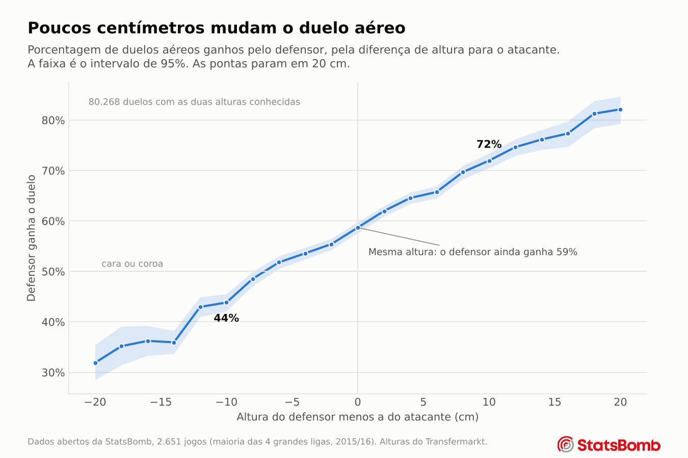
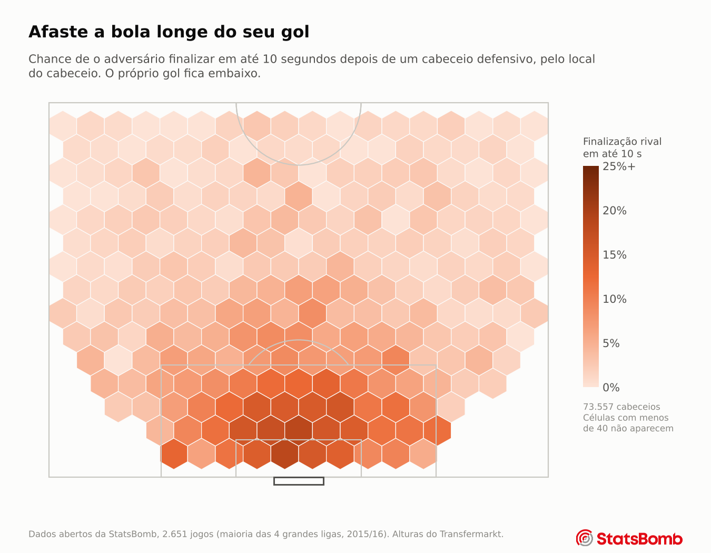
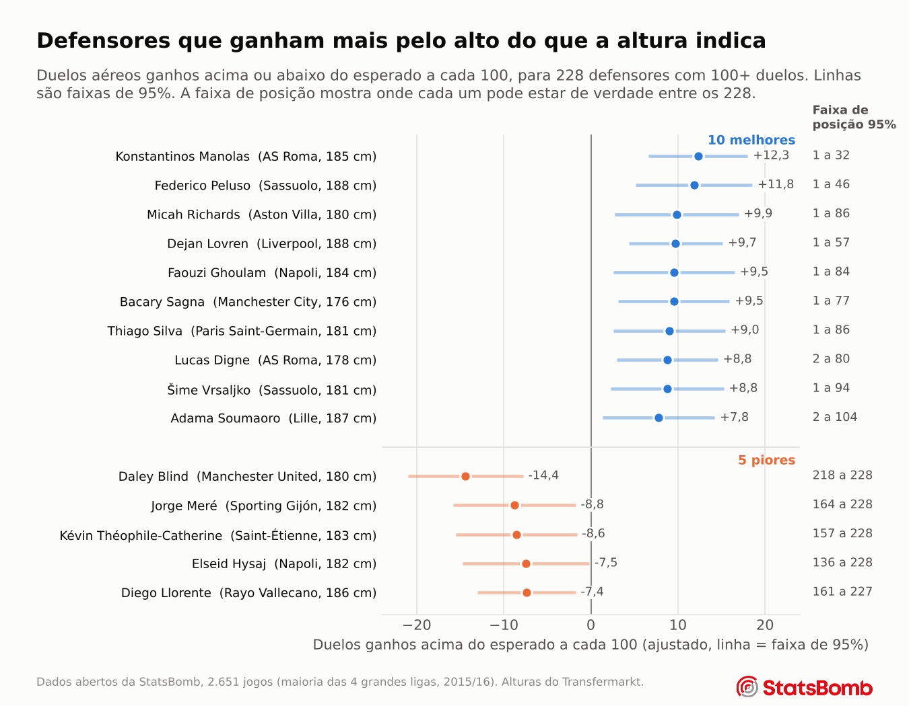

Capítulo 3
Cabeceios na defesa
Quem ganha os duelos aéreos, e o que torna um cabeceio defensivo realmente seguro?
A altura vem primeiro
A StatsBomb registra o perdedor de cada duelo aéreo e o liga ao vencedor, então os dois jogadores e as duas alturas são conhecidos. Isso permite fazer a pergunta mais simples diretamente.

Quando o defensor é mais de 10 cm mais baixo que o atacante, ele ganha 39% dos duelos. Quando é mais de 10 cm mais alto, ganha 76%. Mesmo com a mesma altura, o defensor ganha 59%. Os dados não dizem por quê, mas um motivo provável é que os defensores costumam estar de frente para a bola quando ela chega, enquanto os atacantes muitas vezes precisam girar ou correr até ela.
O que decide um duelo
Um modelo treinado com 93.684 duelos e testado em jogos que não tinha visto foi analisado para ver o quanto depende de cada tipo de informação. O método é simples. Embaralha-se um tipo de informação ao acaso para que ela não combine mais com os duelos, e mede-se o quanto as previsões pioram. Informações que se sobrepõem, como as alturas dos dois jogadores e a diferença entre elas, são embaralhadas juntas, e o teste é repetido 15 vezes em diferentes jogos separados.
| O que foi embaralhado | Parte da precisão do modelo | Faixa nos 15 testes |
|---|---|---|
| Altura dos dois jogadores e a diferença | 30% | 26% a 35% |
| Onde o duelo acontece | 17% | 14% a 19% |
| De onde a bola saiu | 16% | 11% a 19% |
| Posições dos dois jogadores | 14% | 12% a 18% |
| Tipo e trajetória da bola | 12% | 10% a 15% |
| Fase do jogo, como um tiro de meta ou um escanteio | 10% | 8% a 12% |
A altura ficou em primeiro nos 15 testes. Uma versão anterior desta página dizia que a altura era o terceiro fator mais importante, porque embaralhava só a diferença de altura enquanto o modelo ainda via as duas alturas. A página de Método mostra as duas versões.
Colocar a altura elevou a precisão do modelo (AUC) de 0,643 para 0,667. As duas versões foram avaliadas nos mesmos jogos reamostrados, então a incerteza é medida no próprio ganho. O ganho é de 0,024, com intervalo de 95% de 0,021 a 0,026, e em nenhuma das 1.000 reamostragens a altura deixou de ajudar. Parece pouco, mas duelos são quase cara ou coroa por natureza, então qualquer vantagem confiável conta. O modelo ainda deixa muita coisa sem explicação, e parte disso é talento individual, que o capítulo 4 mede.
Onde você afasta é o que mais importa
Um bom cabeceio defensivo faz mais do que ganhar a bola. Ele precisa impedir que o adversário finalize logo depois. Para 75.968 cabeceios defensivos, o modelo verifica se o outro time finalizou em até 10 segundos.

Um cabeceio feito dentro da própria área é seguido de uma finalização adversária 14% das vezes. Fora da área, menos de 3%. A distância do gol explica cerca de três quartos do que esse modelo sabe. O defensor em si parece importar bem menos, já que o quanto os afastamentos de um jogador evitam perigo quase não se repete de um conjunto de jogos para outro.
Ficar com a bola
Depois de um cabeceio defensivo, o time que defende ganha a bola seguinte 45% das vezes. Uma armadilha foi evitada aqui. A StatsBomb costuma registrar um cabeceio como passe quando ele chega a um companheiro e como afastamento quando não chega, então usar essa marcação teria dado a resposta ao modelo sem ninguém perceber. Ela ficou de fora.
Quem é bom pelo alto
Quando o modelo já sabe a altura dos dois jogadores, o tipo de bola, o local e as posições, qualquer jogador que ainda ganhe mais duelos do que o esperado está fazendo algo que a situação não explica.
